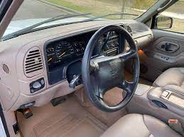
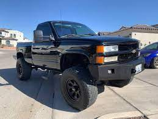
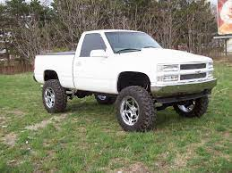
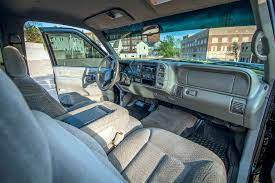
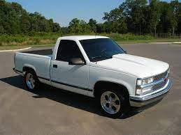
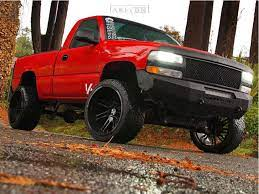
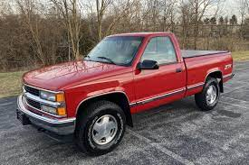
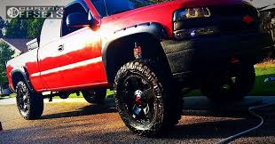

These years of the Chevrolet are the most popular for many reasons. In these Article I will be telling you why.
The Chevy Silverado was the first truck to use a hydorforming way to make the truck lightweight using durable steel.
  Most owerners rated the 1998 Chevy a 4 out of 5 because, it has a full cab, get towing power, and also, the 1998 staring having alot more upgrades that you could add on to it when so time and money.
  The 1999 is most peoples favorite truck because in 1999 chevy started a new look on the front end. You can see the different design in the photos below. The 1999 have a 5.3L V-8 engine, auto Transmission,around 250horsepower, silver alumian wheels, and heated seats for the driver and passernger seats.
 